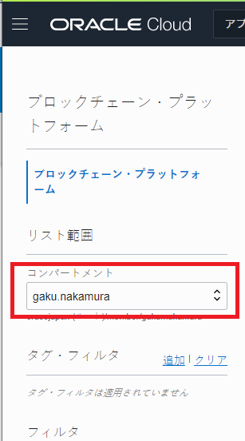
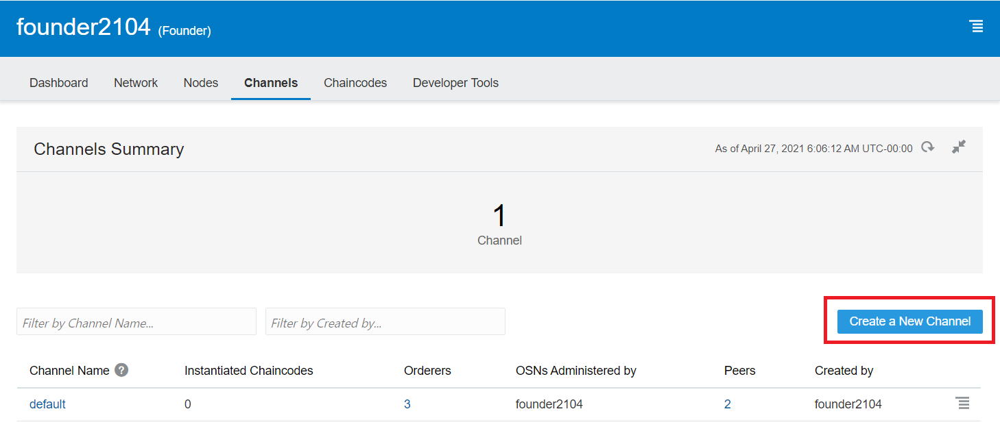
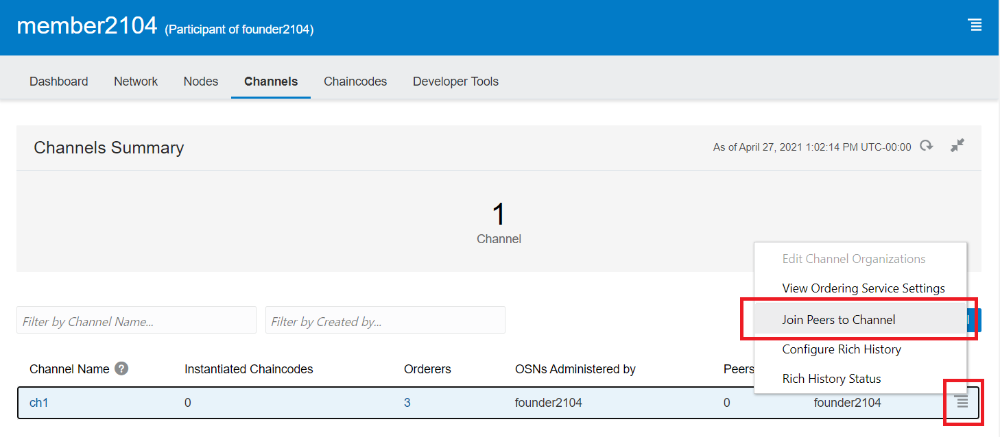

この文書は Oracle Blockchain Platform（OBP）で Channel を作成する方法、および Channel への インスタンスとPeer ノードの追加をステップ・バイ・ステップで紹介するチュートリアルです。
この文書は、2021年4月時点での最新バージョン(21.1.2)を元に作成されています。
0. 前提の理解
0.1 Hyperledger Fabric における Channel
OBP はパーミッション型のブロックチェーンプロトコルである Hyperledger Fabric をベースとしたブロックチェーンプラットフォームです。
Hyperledger Fabric では、ブロックチェーン・ネットワークの中でのデータとロジックの共有範囲の制御などのための機能として、Channel という仕組みを備えています。Channel はブロックチェーン・ネットワークに対してある種のサブネットワークとして機能し、Channel ごとに参加する Organization、Peer、Orderer を構成したり、動作させる Chaincode を定義したりすることなどができます。
Channel はまず Organization レベルで参加し、その後 Organization 内で配下の Peer や Orderer を追加する、という 2 層での所属関係があります。
0.2 このチュートリアルでのブロックチェーン・ネットワーク構成
このチュートリアルの例では、 Founder2104 という Founder インスタンスと、 Member2104 という Participant インスタンスから成るブロックチェーン・ネットワークとなっています。
なお、ここでの例では Founder インスタンスで Channel を作成し、Participant インスタンスをその Channel に作成していますが、Participant インスタンスで Channel を作成し、Founder インスタンスや他の Participant インスタンスを参加させることも可能です。その際も手順はほぼ同様です。
1 Founder インスタンスで Channel を作成する
Founder インスタンスで Channel を作成します。
-
OCI コンソールを開きます。
-
OBP インスタンスの存在するデータリージョンを選択します（ここでは Japan East(Tokyo) を選択）。

-
左上のメニューをクリックし、「Blockchain Platform」 をクリックします。

-
画面左の「コンパートメント」で、OBP インスタンスの存在するコンパートメント （ここでは gaku.nakamura コンパートメント）を選択します。

-
選択したデータリージョン、コンパートメントに存在するインスタンスの一覧が表示されます。Founder インスタンス （ここでは founder2104）をクリックします。

-
インスタンス詳細画面が表示されます。サービス・コンソール をクリックします。

-
サービス・コンソールが開き、ダッシュボードが表示されます。上部のメニューからChannels をクリックします。

-
Channels ページが表示されます。Create a New Channelをクリックします。

-
Channel 情報入力ダイアログが表示されます。任意のChannel 名（例ではch1）を入力します。また、参加させたい Organization（OBP インスタンス）があればOrganizations の欄でチェックをしておきます（例ではmember2104を追加）。そして、自身の Peer ノードのうち、Channel に加えたいPeer ノードを Peers to Join Channel で追加しておきます。準備ができたらSubmitをクリックします。

Memo
Organization および Peer ノードは、Channel 作成時点で追加しなかった場合には後からも追加できます（手順は後述）。
-
確認ダイアログが表示されます。Channel は一度作成すると削除できない（Hyperledger Fabric の仕様）ので注意してください。問題なければYesをクリックします。

-
Channels ページが表示されます。しばらく（～ 1,2 分程度）待っていると、作成した Channel が反映されます（右上の更新ボタンをクリックすると表示がリフレッシュされます）。

2 作成された Channel に Participant インスタンスの Peer ノードを追加する
先程作成した Channel について、Participant インスタンスは Organization レベルでは参加していますが、まだ Participant インスタンス配下の Peer ノードはいずれも Channel に加えられていません。Channel に Peer ノードを追加していきます。
-
先程の手順と同様に、Participant のサービス・コンソールを開きます。上部のメニューからChannels をクリックします。

-
Channels ページが表示されます。表示されている Channel の一覧で、追加したい Channel の右側にあるメニューボタンから、Join Peers to Channelをクリックします。

-
表示されたダイアログで、Channel に加えたいPeer ノードを Peers to Join Channel で追加し、Joinをクリックします。

-
Channels ページが表示されます。Channel 一覧の Peers 欄には、その Channel に参加している自身の配下の Peer ノード数が表示されます。追加分が反映されていることを確認してください（右上の更新ボタンをクリックすると表示がリフレッシュされます）。

以上でこのチュートリアルは終了です。